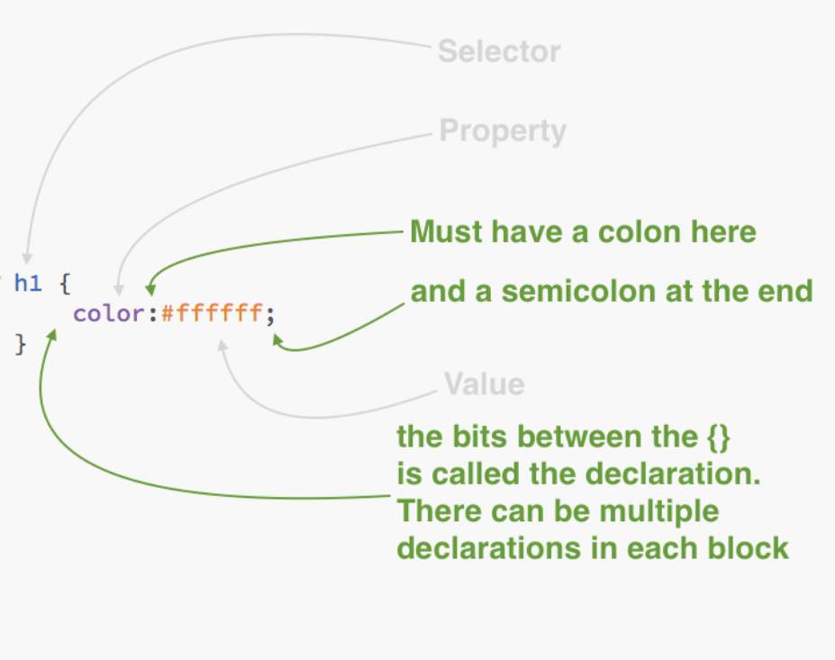

Front-end Web Design
Module 1
Front-end Web Design ====== ## CSS fundamentals
## These slides - Why is it called CSS? - Basic syntax - Targeting elements - Basic properties
## Why CSS? Stands for: Cascading Style Sheets - Styles cascade from the top to the bottom - Styles added later can override ones from the top Works internally as well - If you include the same property twice, the latter one will be used
## Syntax <img src="assets/images/5.3-1.png" alt="Syntax" height="500px;">
## Syntax 
# Let's get started!
<!-- open brackets-->
## Questions Use the discussion forum or ask in class
## Next The box model